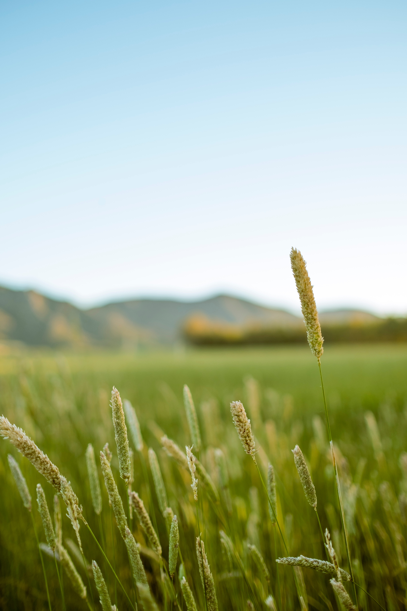

Agricultura sustentável é aquela que respeita o meio ambiente, é justa do ponto de vista social e consegue ser economicamente viável. A agricultura para ser considerada sustentável deve garantir, às gerações futuras, a capacidade de suprir as necessidades de produção e qualidade de vida no planeta.
Cultivar alimentos sem o uso de fertilizantes químicos sintéticos, pesticidas ou organismos geneticamente modificados (OGMs). Ela enfatiza a utilização de práticas naturais, como compostagem, rotação de culturas, manejo integrado de pragas e conservação do solo.
Utilizar práticas que minimizam a perturbação do solo, como aração mínima ou zero, plantio direto e cobertura vegetal. Essas técnicas ajudam a reduzir a erosão do solo, melhorar a qualidade da água, aumentar a retenção de umidade e preservar a vida microbiana benéfica no solo.
Cultivar alimentos em áreas urbanas ou próximas às cidades, promovendo a produção local de alimentos frescos, reduzindo a dependência do transporte de longa distância e melhorando o acesso a alimentos saudáveis.
A agricultura sustentável prioriza a adoção de práticas que ajudam a preservar a saúde do solo, como o uso de técnicas de manejo que reduzem a erosão, como a cobertura vegetal e o plantio direto. Isso ajuda a evitar a degradação do solo, a perda de nutrientes e a contaminação de corpos d'água.
A agricultura sustentável incentiva a conservação da biodiversidade. Ao adotar práticas como a rotação de culturas, o cultivo de variedades tradicionais e a criação de habitats naturais, os agricultores contribuem para a manutenção da diversidade de plantas, insetos, animais e microorganismos, o que é fundamental para a saúde dos ecossistemas.